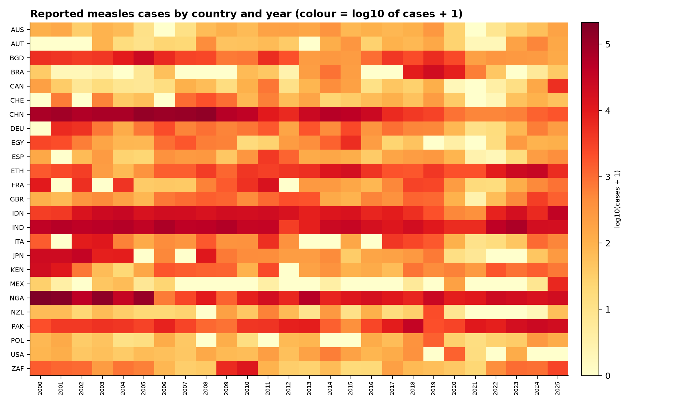
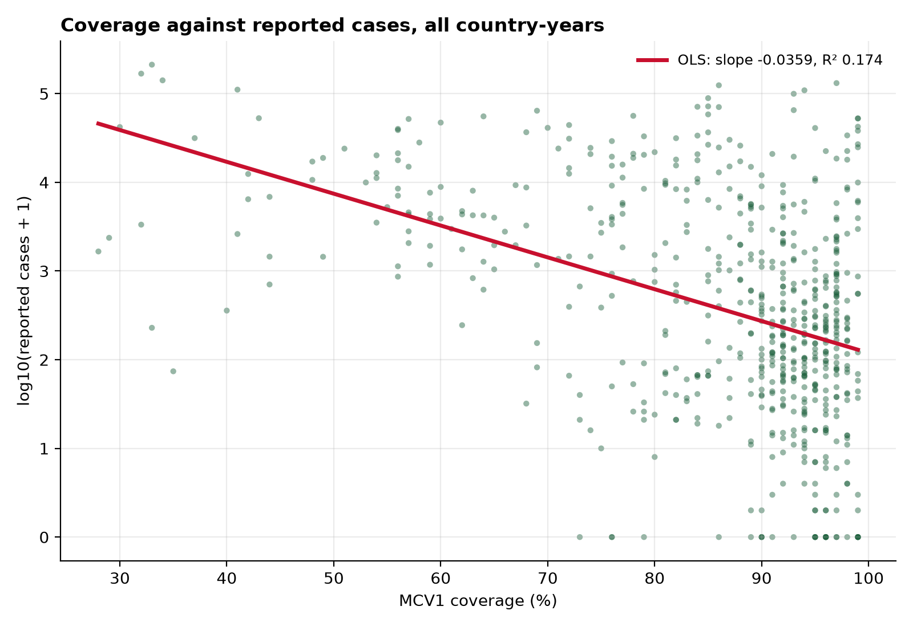
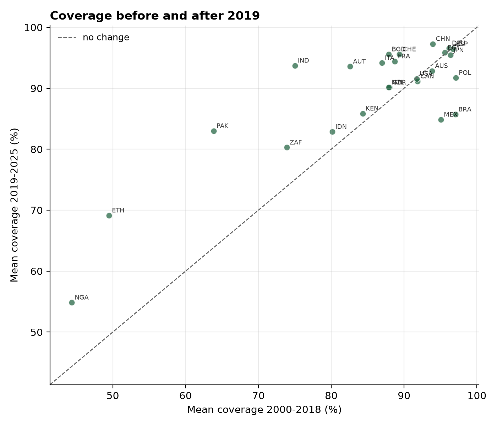

Executive summary
Coverage has risen in most countries, but the gains are uneven. Higher coverage is associated with fewer cases — yet the association is looser than most reporting suggests, and that looseness is the finding.
Coverage has risen in most countries. The median country improved by 0.40 percentage points per year, and 21 of 25 trends are statistically significant. India is the strongest improver at +1.71 pp/year (R² = 0.93, essentially linear). Brazil is the strongest decliner at −0.60 pp/year.
The 2019 turning point is real but not universal. Comparing mean coverage before 2019 with the period after, 17 of 25 countries improved and 8 declined. Brazil lost 11.3 percentage points; Ethiopia gained 19.7.
Higher coverage is associated with fewer cases, but the relationship is loose. Pooled across all country-years, each additional percentage point of coverage is associated with a 0.036-unit reduction in log10(cases+1), with p < 0.001. However, coverage explains only 17.4% of the variation in case counts.
Why the low R² is the finding, not a failure. Outbreaks depend on local clustering of susceptible individuals, importation pressure from neighbours, and campaign timing — none of which are in the model. A country can be at 95% nationally and still have a school at 70%. Anyone reporting a much higher R² on this data should be suspected of having leaked the outcome into the predictors.
A caveat on the data itself. Reported cases are a function of both true incidence and how aggressively a country looks for cases. A country that tests more will report more. This analysis cannot separate the two.
Data and sources
All data comes from the WHO Global Health Observatory (GHO), accessed through its public API. Two indicators:
| Code | Indicator | Unit |
|---|---|---|
WHS8_110 | MCV1 coverage among 1-year-olds | % |
WHS3_62 | Measles — number of reported cases | count |
Twenty-five countries span income levels, population sizes and geographies — 8 in Europe, 4 in the Americas, 6 in Asia, 5 in Africa, 2 in Oceania. This is not a random sample: it is a deliberate spread chosen to give the analysis enough variation to detect a relationship. Findings should not be read as global estimates.
The coverage indicator begins in 2000. Case data extends back to 1974, but earlier years have no coverage denominator and were excluded. The window is therefore 2000–2025.
Method: document, do not impute
Every cleaning decision is recorded in a machine-readable log and a human-readable quality report. The guiding rule: no value is invented.
Imputing surveillance counts would fabricate data. A missing case count is not a zero — it may mean no cases, or no reporting, or a reporting delay. Treating it as zero would bias every downstream estimate downward. The merge therefore keeps unmatched rows and flags them, so any later analysis can choose its own policy.
coverage: 650 raw rows → 650 clean, 25 countries
cases: 1173 raw rows → 618 clean, 25 countries
merge: outer join, 32 coverage-only rows kept and flaggedThe resulting dataset is 650 rows with 100% coverage completeness and 618 rows carrying both a coverage value and a case count.
Findings
1. Coverage trends

Across the 25 countries, the median annual change is +0.40 percentage points. Twenty-one of 25 trends are statistically significant.
Steepest rise — India. +1.71 pp/year (95% CI 1.51 to 1.91), R² = 0.93. India moved from roughly 56% coverage in 2000 to near 97% by 2025, with a near-monotonic trajectory. This is the clearest programme-scale improvement in the sample.
Steepest fall — Brazil. −0.60 pp/year (95% CI −0.89 to −0.31), R² = 0.43. Brazil began the period near 99% and declined to roughly 80% before a partial recovery. The low R² reflects the shape: a long plateau, then a sharp drop, then a rebound — a line is a poor description of that path, and the slope should be read as an average rather than a description.
2. Reported cases

Cases are shown on a log10 scale because the distribution is extremely skewed — a single outbreak year can exceed the sum of a decade of quiet years.
Three patterns are visible: concentration in a subset of countries; periodicity, with outbreak years appearing roughly every 3–5 years in several countries, consistent with accumulation of susceptible children between campaigns; and recent resurgence in the 2019–2025 period, including in some high-coverage countries.
3. Coverage against cases

The pooled relationship is negative and highly significant:
log10(cases+1) = 4.68 − 0.036 × coverage
p < 0.001, R² = 0.174, n = 618The direction matches vaccination theory. The magnitude is modest: the model explains 17.4% of the variance in case counts.
4. The 2019 split

| Direction | Countries |
|---|---|
| Improved 2019–2025 vs 2000–2018 | 17 |
| Declined | 8 |
Largest decline: Brazil, −11.3 pp. Largest gain: Ethiopia, +19.7 pp. The split does not show a uniform pandemic collapse — most countries continued to improve. In Brazil's case the decline began before 2019, which suggests the drop is not solely pandemic-related.
Implications for planning
- Coverage is a leading indicator, not an outcome. A national figure of 95% is compatible with a local outbreak. Monitoring that tracks only the national number will be surprised by outbreaks that were visible in the subnational distribution.
- Surveillance quality is a confounder that cannot be ignored. Variation in reported cases across countries of similar coverage is partly real epidemiology and partly real differences in testing. Any cross-country comparison should state which it measures.
- Trend, not level, is the more actionable number. Brazil at 80% recovering is a different programme problem from a country at 80% and flat.
- The period after 2019 is heterogeneous. Planning cannot assume a uniform pandemic effect. The 8 declining countries warrant investigation; the 17 improving ones suggest routine immunisation can be maintained through disruption.
- Zero reported cases is ambiguous. A zero can mean elimination or absence of surveillance.
Limitations
- Ecological design. All analysis is at country-year level. Associations at this level do not transfer to individuals.
- No causal identification. No instrument, no natural experiment, no fixed effects. The pooled coefficient is descriptive.
- Case reporting heterogeneity. Reported cases conflate incidence with surveillance effort. This is the single largest threat to the coverage–cases interpretation.
- Purposive country selection. The 25 countries were chosen for variation, not randomly.
- National coverage measure. MCV1 is an administrative estimate, subject to denominator uncertainty. Subnational heterogeneity, which drives outbreaks, is invisible here.
- Descriptive 2019 split. It identifies a difference, not a cause.
Reproducibility
Three scripts run in sequence. No manual steps, no hidden state.
python 01_fetch.py # downloads raw JSON from the WHO API
python 02_clean.py # cleans, merges, writes decisions log
python 03_analyse.py # statistics and figuresTo verify this claim rather than assert it, I deleted every derived file and figure, then re-ran all three scripts from scratch. All five output files returned with identical byte sizes (CSV 22.9 KB, results 1.2 KB, trends 1.1 KB) and the four figures regenerated.